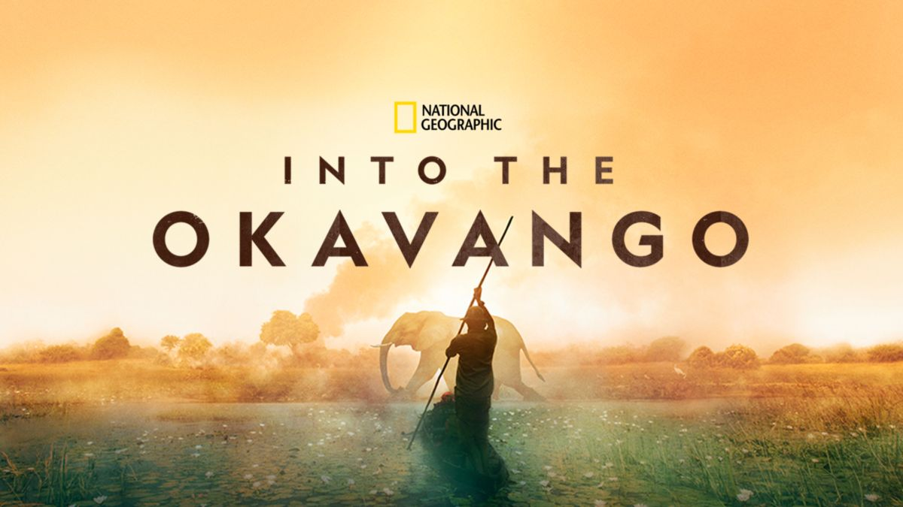

December, 2019
Documentary – Picture
Dane Aleksander, art director at Animat Habitat™
This article is continued from Documentary – Motion. Whereas the first set of documentary films was selected based on message, narrative and perspective, the second set was selected based on authenticity. Each of the first set of documentary films directs a call to action, call it motion. The second set focuses on picture. This second set of documentary films each give voice to the plight of the natural world with imagery that speaks boldly and clearly.
Part two looks at two documentaries: The Elephant Queen (2018) and Into the Okavango (2018). The Elephant Queen is a story from Mark Deeble and Victoria Stone, to be published with the release of Apple TV Plus. Into the Okavango is a journey with Dr. David Boyes, produced by National Geographic, to be published with the release of Disney Plus.
The Elephant Queen (2018)
1h 36min
The Elephant Queen — an Apple Original documentary film shares the traditional story of the matriarchal elephant herd on the big screen. The family story is a familiar journey: there and back again, guided by an elder female who knows where to go and when to go and so on. This story has been told and retold with a high-watermark of cinematography by the BBC Natural History Unit in the television mini-series Planet Earth (2006) and Planet Earth II (2016). This film directed by Mark Deeble and Victoria Stone manages to match that picturesque visual language, capturing the intimate relationships of animals on film in a way that seems genuine and that shows the ecosystems as interconnected.
“For thousands of years, [elephants] were thought to be able to summon the rain. The truth is that [a matriarch] could sense rain coming when it was over a hundred miles away.” — Chiwetel Ejiofor, narrator of The Elephant Queen (2018)
The film takes advantage of a feature length narrative arc to consider the dynamic of a family unit and the ecosystems that surround them. This gives time to connect with individual elephants in the herd, and gives weight to the responsability of a matriarch to show the way to food and to water, and in an unrelenting habitat and so on. This familiar journey of a herd of elephants in Africa is realized as an individual story of a wise and gentle matriarch named Athena. The film is narrated by Chiwetel Ejiofor, who gives voice to the journey of Athena and her family, and mixed with a score that creates space for the imagery to fill in beats of the story in-between. The Elephant Queen (2018) turns the plight of elephants in a ravaged landscape into a relatable story of survival.

The Elephant Queen (2018) © Apple TV
The film is not specific about location. Red earth and a feature appearance of Satao hint at where the ‘refuge’ is, and at where the ‘kingdom’ for Athena's family may be. This story of migration throughout the wet and dry seasons is common however to elephants across Africa. The film is able to overlook this local context in favor of building on the characters within an individual family group, including the wildlife around them, and indeed featuring a legend: Satao, one of the last of the big tuskers. The treatement of Satao in this film, entering the frame and incidently revealing his part role in the story of Athena, was clearly a meaningful moment for the filmmakers and an absolute masterclass of wildlife filmmaking. The sequence with Satao is an exclamation mark on a beautiful, bittersweet story that reads like a love letter to elephants.
The film is dedicated to the memory of Satao and Athena. Satao was killed by poachers during the making of this film. He was the world's largest tusker.
Athena was last seen leading her family away from the kingdom.
The Elephant Queen (documentary film, 2018) is rated 7.8 on IMDB.
The Elephant Queen – Official Trailer (2018).
Discover more about elephants and how you can help them: theeelephantqueen.com.
Into the Okavango (2018)
1h 28min
Into the Okavango — a National Geographic documentary film.
In review.

Into the Okavango (2018) © National Geographic
Into the Okavango (documentary film, 2018) is rated 7.6 on IMDB.
Into the Okavango – Official Trailer (2018).
Take action now: nationalgeographic.org/projects/okavango/.